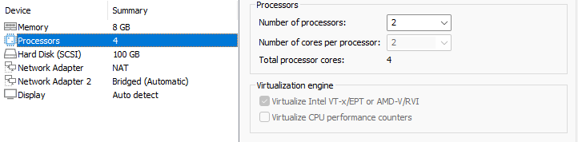
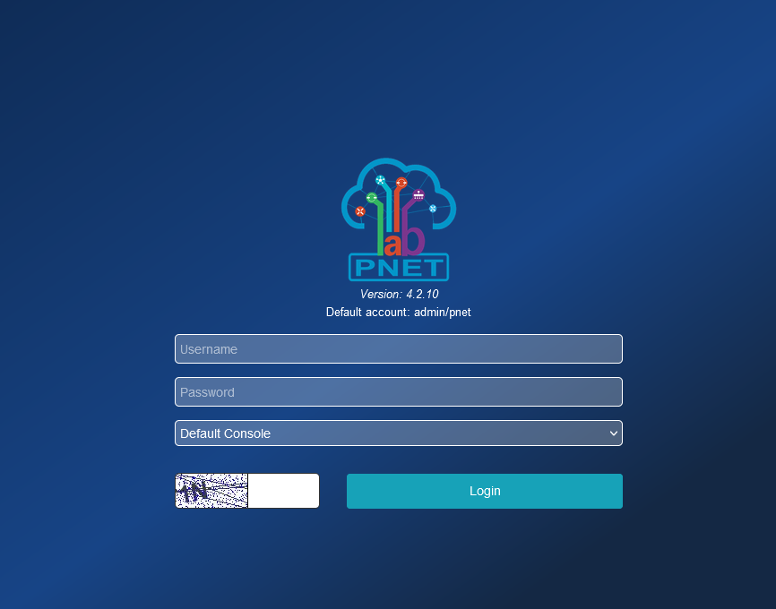
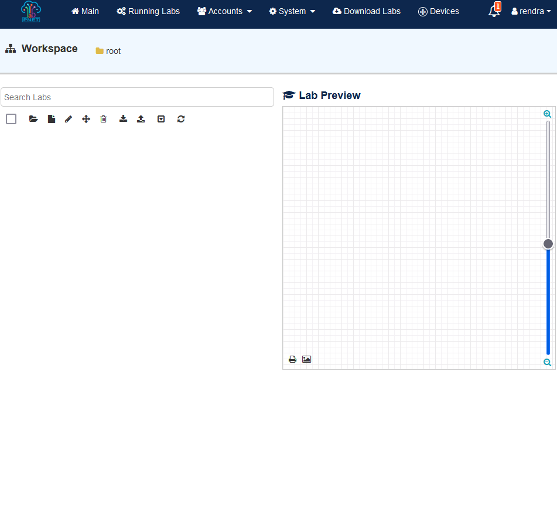
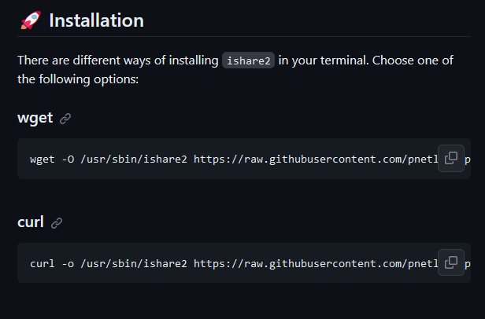
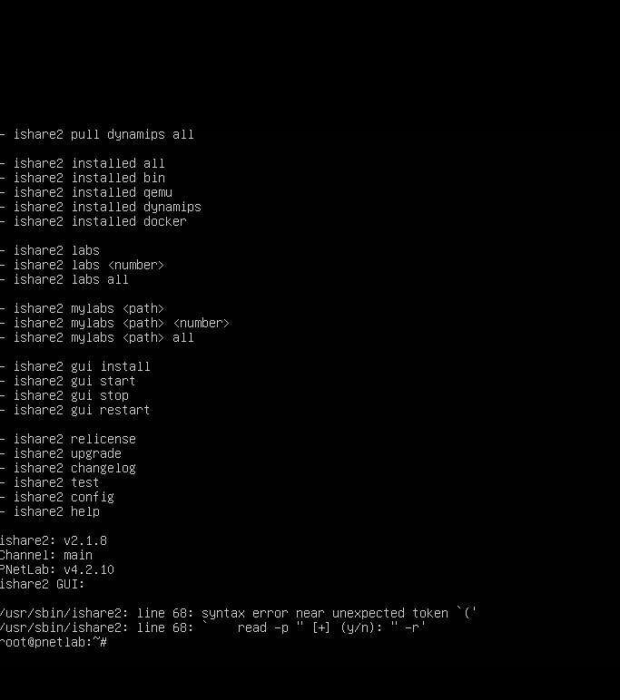

PNETLAB Tutorial
Download
1.Download PNETLab Dengan Link Dibawah :
Setting Interfaces
1.Setting virtual machine kalian seperti ini:

2.Jika sudah,atur network adapater nya seperti ini

3.Dan kalian jangan lupa untuk mengatur Network adapter 2 nya seoerti ini:

4.Kalo kalian sudah menyetting semua nya,maka tampilannya seperti ini

5.Masukan username rootdan juga masukan password yang kalian sudah buat diawal tadi. dan tampilannya seperti ini

6.Oh iya kalau kalian ingin mengubah akun kalian,kalian bisa ikut cara ini
1 .ketik https kalian yang ini di browser
https://192.168.253.130/store/public/auth/login/offline?link=https%3A%2F%2F192.168.253.130%2Fstore%2Fpublic%2Fadmin%2Fmain%2Fview&error=&success=
2.jika sudah maka tampilannya akan seperti ini

3 .dan jika kalian sudah login,maka tampilannya seperti ini

7.
Setting ishare2
1.Kalian bisa download ishare2 nya dengan cara klik tombol dibawah
2.Kalian bisa scroll sampe bawah dan menemukan seperti ini

dan kalian bisa memilih 2 opsi ini
wget -O /usr/sbin/ishare2 https://raw.githubusercontent.com/pnetlabrepo/ishare2/main/ishare2 > /dev/null 2>&1 && chmod +x /usr/sbin/ishare2 && ishare2
curl -o /usr/sbin/ishare2 https://raw.githubusercontent.com/pnetlabrepo/ishare2/main/ishare2 > /dev/null 2>&1 && chmod +x /usr/sbin/ishare2 && ishare2\
3.Jika sudah dicopy,kalian bisa paste di PNET nya dan jadinya seperti ini
